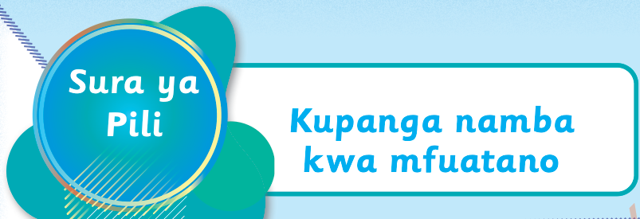

Tupange namba kuanzia ndogo hadi kubwa zaidi
Namba zinaweza kupangwa kuanzia ndogo zaidi hadi kubwa zaidi kwa mfuatano kama ifuatavyo:
Mfano
Namba zilizochanganywa:107 103 109 106 101
Namba zilizopangwa:101 103 106 107 109
Zoezi la kwanza
Panga namba zifuatazo kuanzia ndogo zaidi hadi kubwa zaidi kwa mfuatano:
1.245 237 220 253 212
DashiDashiDashiDashiDashi
2.483 464 433 344 423
DashiDashiDashiDashiDashi
3.377 368 381 399 309
DashiDashiDashiDashiDashi
4.189 164 199 177 130
DashiDashiDashiDashiDashi